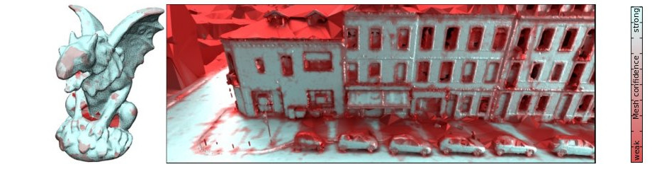

3D watertight mesh generation with uncertainties from ubiquitous data

Abstract
In this paper, we propose a generic framework for watertight mesh generation with uncertainties that provides a confidence measure on each reconstructed mesh triangle. Its input is a set of vision-based or Lidar-based 3D measurements which are converted to a set of mass functions that characterize the level of …